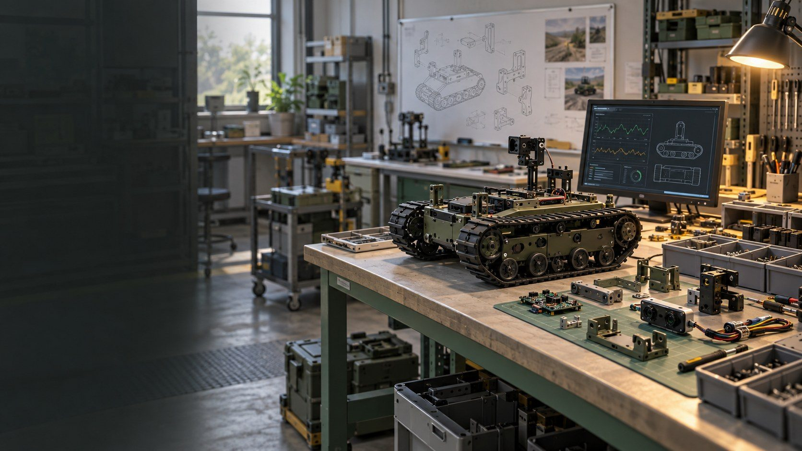
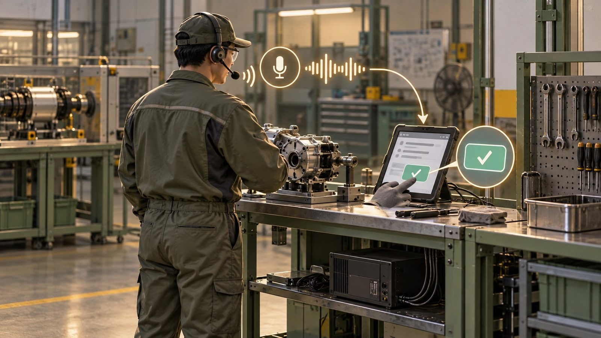
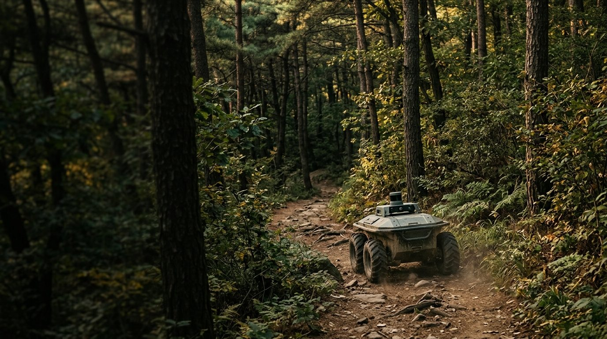
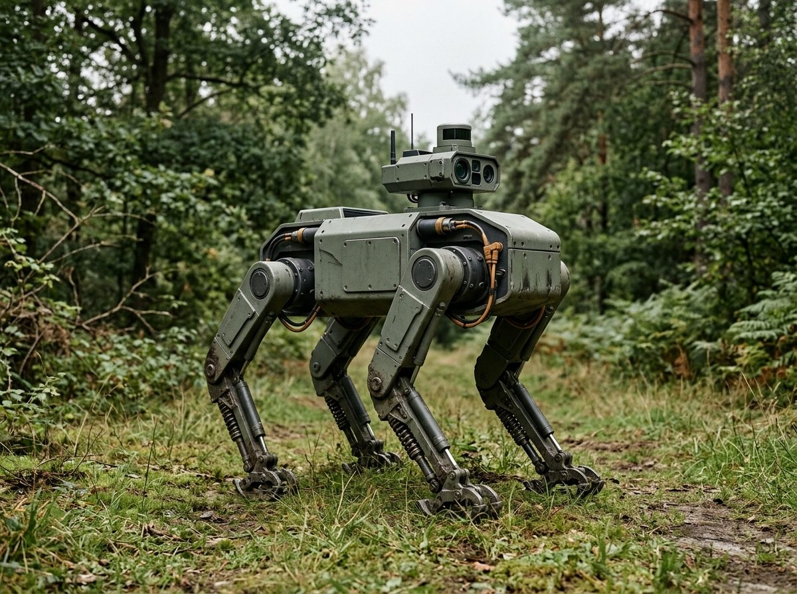
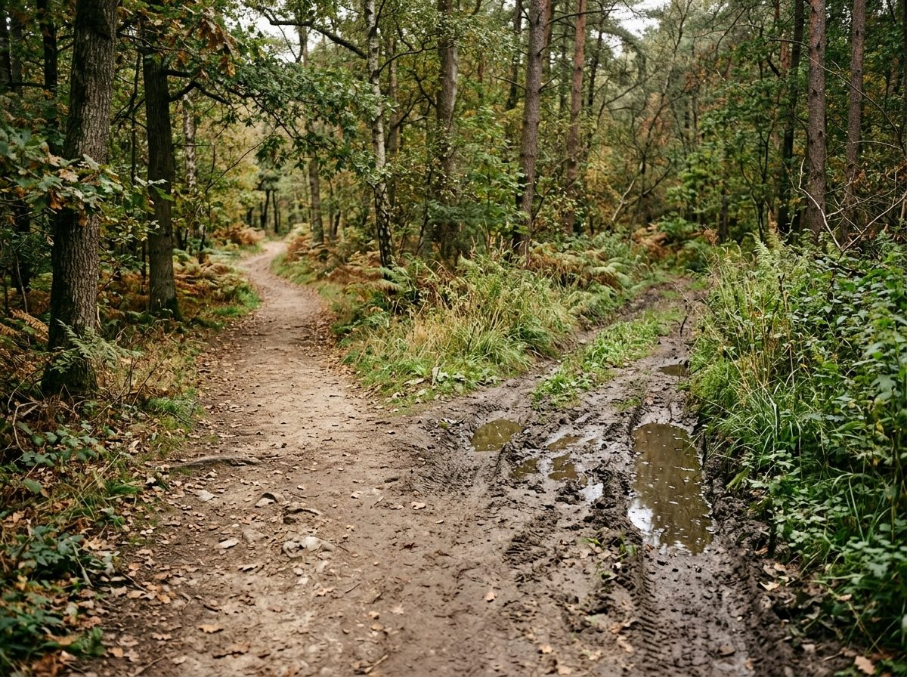

A4AI의
제조 진출 방안
지금 신청할 지원사업과
첫 제품 제안
2026.10.16
목차
현재 제조 흐름 분석
제조 현장의 데이터·AI 활용 흐름
제조 진출과 공장등록
등록의 역할과 실제 제조 준비 구분
지금 신청할 공고
주관기관·제외 사유·진행 과제 중복 확인
첫 제품: 현장 음성 작업기록
왜 이것인지, 어떻게 작동하고 무엇이 좋아지나
6개월 실행 계획과 결론
시작 준비와 단계별 실행 계획

개념 이미지 (AI 생성)결론 먼저: 세 가지를 제안드립니다제조 기반 준비와 기존 자산 활용을 함께 검토합니다
제조 기반부터 준비
제작 범위·협력사·운영 조건 확인
공고 증빙·중복 확인
스마트공장 제외, 대체 지원 검토
첫 제품 방향 유지
보유 데이터 재사용·VCM 연계

현재 제조 흐름 분석
제조 업무 전반에서 데이터 활용과 현장 적용성이 중요해집니다
현재 제조 흐름 분석: 현장 데이터의 활용이 중요해집니다제조 AI의 적용 범위와 실제 도입 조건
- 제품 기획·설계부터 생산공정, 구매·물류·경영지원까지 AI 적용 범위 확대
- 제조기업은 활용 가능한 솔루션 정보가 부족하고, 공급기업은 수요처 발굴이 과제
- 제조 AI 적용에는 현장 데이터와 업무 양식, 실제 사용자의 확인이 필요
- 우리의 초기 검토는 설비 직접 제어보다 현장 업무와 데이터 활용부터
제품 기획·설계
제품 요구·설계 정보 활용
생산공정·품질
공정·검사 데이터와 기준 정리
물류·현장 업무
기록·검색·인수인계에 활용

제조 진출과 공장등록
공장등록과 실제 제조·운영 기반을 구분합니다
공장등록과 실제 제조 기반은 구분해야 합니다등록 이후에도 현장·제작·증빙 조건은 별도 준비
제조 기반 준비
- 제조·설비 운영 기반 없음
- 협력 현장·제작 역할 준비 필요
- 관련 납품·거래 증빙 없음
- 신청 역할과 실제 업종 대조
실제 제작·운영 조건
- 사업장·업종·제작 범위 정비
- 인력·협력 제작·시험 기준 준비
- 등록증과 별도로 거래 증빙 축적
- 공고별 제조 현장·중복 요건 확인
제조 진출 후 검토할 일: 부품·시제품 제작과 시험현재는 생산에 앞서 품목·협력 제작·시험 운영 준비
방산 무인체계 부품·시제품
UGV·드론용 센서·제어 모듈, 관제 장비
피지컬 AI·로봇 시험 제작
시험용 지그, 센서·제어 모듈, 소량 시제품
AI의 첫 적용 검토
협력 현장 확보 후 음성 기록의 재사용 가능성 확인
 개념 이미지 (AI 생성)
개념 이미지 (AI 생성)
지금 신청할 공고
주관기관·필수 증빙·진행 과제 중복을 다시 대조합니다
공고는 이렇게 걸렀습니다제외 사유와 진행 과제의 중복을 함께 확인
지금 검토할 공고: 기획·인프라·시험 지원주관·수행기관과 지원 조건을 함께 표시
| 마감 | 공고 / 주관·수행기관 | 받는 것 | 조건·과제 대조 |
|---|---|---|---|
| 상시 | 경북 AX랩 활용기업 포항테크노파크 | AI 인프라·공간·컨설팅 | 제조 AX 사업화·활용계획·잔여석 확인 |
| 10.30 | 구미 원스톱 에이전트 구미전자정보기술원 | 전문가 매칭·기획 지원 | 유사 정책자금·실제 업종 제한 대조 |
| 상시 | 온디바이스 AI 애로기술 한국로봇융합연구원 | 간접 기술지도, 수행 11.30까지 | 최근 2년 동일제품·동일내용 지원 제외 |
| 11.30 | 공유공장 제조창업 시험 FITI시험연구원 | 부품·모듈 시험검사 | 시료·시험계획·잔여 건수·기존 시험비 대조 |
조건부 공고: 무엇을 갖추면 되는지파트너·증빙과 기존 과제 범위를 확인한 뒤 판단
| 마감 | 공고 / 주관·수행기관 | 갖춰야 할 조건 | 구분 |
|---|---|---|---|
| 10.27 | 항공 기체부품 / 부산테크노파크 | 항공 관련 제조기업·제품·시설 조건 | 확인 |
| 10.29 | 딥테크 투자 / 한국과학기술지주 | 출연연 기술 실시권·기술 출처 | 확인 |
| 11.12 | AX R&D / 대구디지털혁신진흥원 | 대구 주관기관과 별도 개발 범위 | 파트너 |
| 11.30 | 국방기술 민간이전 / 경북테크노파크 | 이전 대상 기술·승인·기존 과제 범위 | 확인 |
| 향후 | 실외이동로봇 / 한국로봇산업진흥원 | 대상 로봇·시험 계획·UGV/RISE 중복 | 준비 |
대체 검토: 경북 AX랩 활용기업설비 투자 전 제조 AX 서비스와 인프라 활용을 준비
- 포항테크노파크 운영
- AI 인프라·공간·교육·컨설팅 활용
- 제조 AX 서비스의 사업화 계획 필요
- 현금·설비 구입 지원과 구분
정기 공고 달력: 다음 6개월과거 공고 시기 기준의 준비 달력 · 2027년 일정·자격은 확정 공고로 확인
첫 제품: 현장 음성 작업기록
보유 데이터 재사용과 VCM에 맞는 제품 방향
보유 AI 기술·데이터와 진행 중인 VCM기존 자산은 후반의 제품 방향과 연결해 검토합니다
- 데이터 이미 보유한 소음·발화 자료를 목록화하고 재활용 가능 범위 확인
- 진행 과제 VCM(VoiceClear-M)의 음성명료도 향상·소음감쇄 방향과 연계
- AI 기술 기존 개발 경험을 현장 기록의 구조화·검색·재사용에 활용
- 추가 준비 제조 현장 데이터·이용 권리·라벨과 실제 업무 조건 대조
 개념 이미지 (AI 생성)
개념 이미지 (AI 생성)첫 제품 방향: 왜 '현장 음성 작업기록'인가보유 데이터 재사용과 VCM 연계가 첫 검토의 근거
| A 음성 작업기록 | B 방산 부품·시제품 | C 피지컬 AI·로봇 | |
|---|---|---|---|
| 기존 자산 활용 | 데이터·VCM 연계 | 높음 | 중간~높음 |
| 설비 투자 | 낮음 | 높음 | 중간 |
| 첫 매출 (추정) | 6~12개월 | 1~2년, 양산 3년+ | 과제 6~12개월 |
| 추가 확인 | 데이터 재사용·권리 | 획득 기간·체계업체 | 삼성 계획 미정 |
제안: A를 첫 제품으로, 첫 적용은 확보 가능한 협력 현장의 작업
제조 기반이 없는 현재는 작업 범위와 데이터 양식을 먼저 정하고, 기록을 다시 검색·인수인계에 쓸 수 있는지 검증합니다.
- 기존 소음·발화 데이터와 VCM 방향 활용
- 공장 설비 투자 적음
- 사족보행 로봇 시제품 개발 약 2년 사례(B의 기간)
현장 음성 작업기록 도우미: 어떻게 작동하고, 무엇이 좋아지나기존 데이터를 활용하고, 확인된 작업 기록을 다시 씁니다
보유 소음·발화 자료
활용 범위·라벨 정리
시제품별 조립·시험 이력
방산 납품·인증 때 근거
음성명료도 개선 방향
현장 기록 활용과 연결
구미 방산·로봇 협력사
검색·인수인계·분석에 재사용

실행 계획과 결론
제조 시작 준비와 6개월 실행 계획의 정리
제조를 시작하기 위한 준비사항제조·설비 기반이 없는 현재, 실행 전 준비할 항목
| 준비 항목 | 할 일 | 남길 결과 |
|---|---|---|
| 현장 수요 | 작업 한 종류·고객·현장 담당자 확인 | 업무 정의서 |
| 제작 협력 | 직접·외주 범위, 사양·견적·납기 비교 | 제작 역할표 |
| 데이터 | 소음·발화 목록·권리·라벨·현장 보완 | 데이터 목록 |
| 시험·운영 | 시험 항목·검수·기록·승인 절차 정리 | 시험·운영 계획 |
| 과제 분리 | VCM·UGV·RISE·K-방산의 산출물·비용 대조 | 신규 업무·예산표 |
6개월 실행 계획10월 공장등록 후 계획 준비 → 11월 시험·실증 → 12~1월 등록·준비 → 2~3월 확산
날짜는 공고 마감일 또는 2026년 공고 시기 기준 예상 · 조건부 공고는 조건 확인 후 신청 · 목표는 내부 계획치이며 결과를 보장하지 않음
최종 결론제조 진출은 준비부터, 음성 기록은 데이터 재사용부터
- 제조·설비 진출 전 수요·협력 제작·시험 준비
- 현장 음성 기록은 데이터 재사용과 VCM 연계
- 지원사업은 납품 증빙·현재 과제 중복 대조 후 선택
1. 수요처·작업 범위
2. 데이터·이용 권리
3. 협력 제작·시험 역할
4. 과제·예산 분리
질의응답
부록: 판정 기준 · 조건부 원문 근거 · 불가 이유 · 7일 규칙 제외 공고
정기 공고 · 숫자 출처 · 시범 측정 방법 · 보유 데이터·진행 과제 · 예산 기준 · 확인 목록
부록 1 · 판정 기준과 걸러 낸 과정
- 회사 조건: 2024.1.15 설립, 구미, 제조·설비 운영 기반과 관련 납품 증빙 없음
- 판정: 가능 / 조건부 / 확인 필요 / 불가 — 실제 신청 역할과 필수 서류 대조
- 7일 규칙: 10.16 기준 10.23까지 마감은 준비 기간 부족으로 이번 검토 제외
- 주된 제외 사유: 지역·거래 증빙·선행 사업 이력·과제 중복·접수 종료
- VCM·UGV·RISE·K-방산 제출본과 비교, 최종 판정은 최신 협약·예산 필요
부록 2 · 공고 조건과 과제 중복 근거
- 방산·모빌리티 스마트공장: 필수 납품내역서·거래확인서 없음 → 이번 신청 제외
- 구미 원스톱 에이전트 / GERI: 유사 정책자금 수행·예정 기업, 단순 서비스업 등 제외 조건 대조
- KIRO 온디바이스 AI: 최근 2년 동일제품·동일내용 지원 제한, VCM·UGV·RISE와 비교
- FITI 시험지원: 시료·시험 항목과 기존 과제의 시험 결과물·비용 대조
- 경북 AX랩 / 포항TP: 신청 유형·제조 AX 사업화·공간 활용·잔여석 확인
부록 3 · 제외·보류한 공고와 이유
- 방산·모빌리티 스마트공장 / 경북TP: 납품내역서·거래확인서 없음 → 제외
- 경북형 스마트공장 기초 2차 / 경북TP: 남은 자리 안동·김천, 구미 불가
- Multi AI Agent 점프업 / TIPA: 지정 선행 스마트제조 과제 완료 이력 필요
- 대구 기술닥터·대전 3D프린팅 / 각 TP: 소재지 요건 불일치
- 포항 스마트공장 / 포항TP: 포항 소재 한정, 물류로봇 시험은 대상 제품 부재
- GERI 9월 기업지원: 9.18 접수 종료, 11.30은 사업 수행기간과 구분
부록 4 · 7일 규칙으로 뺀 공고 (다음 차수 대비)
- 10.16 GERI 온디바이스 AI 기술지도(최대 300만 원, 1개사) — 준비 기간 부족 → 이번 검토 제외
- 10.16 GERI 방산용 시스템반도체 실증 기술지원 2차 — 2027년 차수 대비
- 10.19 방산 중소기업 컨설팅 / 한국방위산업진흥회(최대 3천만 원, 75%) — 2027년 1차(작년 4월)
- 10.23 K-AI 경북형 동반성장 / 경상북도경제진흥원 — 앵커 중견기업을 미리 확보해 2027년 대비
- 10.18 YUnicorn 시제품(대학생·교원 대상), 10.23 원전 공급기업 다변화(분야 아님)
부록 5 · 기관별 정기 공고 요약
- 스마트공장(중기부): 정부형 고도화 작년 11~12월 공고, 최대 2억·50% / 공급기업 Pool 등록은 상시
- AI·데이터(과기정통부): AI바우처 3월(최대 2억), 공급 Pool 매년 재등록 / 데이터바우처 2~3월(최대 4,500만~7,500만 원)
- 방산(방사청·국기연): 부품국산화 1·8월, K-방산 스타트업 3·7월(최대 1억), 방산 컨설팅 4·10월
- 창업·R&D(중기부): 디딤돌 1~4월(최대 2억), TIPS 상시(최대 8억), 창업도약패키지 1월(업력 3년 초과)
- 경북: 국방 역량강화 1월, 무인비행체 2월, 군수품 상용화 3월, 국방기술 민간이전 1~11월
부록 6 · 숫자와 출처
- 중소벤처기업부 제조 AI 솔루션 발굴 자료(2025.9.29): 제조 업무 전반의 AI 적용과 수요·공급기업의 연결 과제
- 중소벤처기업부 2026 스마트제조혁신 통합공고: 세부 사업별 신청 조건은 개별 공고로 확인
- 공고의 주관기관·필수 증빙·중복 제한: 해당 개별 공고와 제출 서식 기준
- 진행 과제: VCM·UGV·금오공대 RISE 계획서, K-방산 제출본(선정·협약 추가 확인)
- 회사 보유 소음·발화 데이터는 확인된 자산, 제조 환경의 적합성·이용 범위는 별도 대조
부록 7 · 음성 작업기록 시범 측정 방법
- 대상: 확보 가능한 협력 현장과 작업 한 종류, 시료·작업 번호를 기준으로 검증
- 기준선: 기록 작성·확인·검색·인수인계 시간과 필수 항목 누락 확인
- 재사용: 원음·수정본·작업 항목·라벨이 연결되어 다시 찾을 수 있는지 측정
- VCM 연계: 보유 소음·발화 데이터의 사용 범위와 제조 환경 보완 필요 확인
- 기존 과제와 비교: 전장 음성 수집·구조화·검증과 동일한 산출물·비용인지 대조
부록 8 · 보유 데이터·진행 과제 상세
- 보유 자산: 기존 소음·발화 데이터, 관련 AI 개발 경험 — 재사용 범위와 권리 확인
- 수행 중 VCM: 창업중심대학 군용 무전기 AI 칩 모듈·음성명료도 개선(2026.05~12)
- 수행 중 UGV: 경북국방벤처 야지 경로판단 검증 SW(2026.06~2027.06)
- 수행 중 RISE: 온디바이스 AI 자율순찰 로봇(2026.04~12)
- K-방산 전장 음성 데이터화: 제출본 확인, 선정·협약 상태는 추가 확인
- 과거 완료: RISE 드론·LiDAR SLAM, 초기창업패키지·전주기 방산 창업 등과 구분
부록 9 · 지원금과 회사 부담 계산 기준
- 구미 원스톱 / GERI: 최대 300만원은 전문가에게 지급, 기업의 설비 구입 자금과 구분
- KIRO 기술지도: 최대 500만원 간접지원, 기업 현금 수령액으로 계산하지 않음
- 경북 AX랩: 인프라·업무공간·교육 등 활용 지원, 추후 발생 비용은 협약 확인
- FITI 시험: 필요한 시료·시험 항목·잔여 지원 건수와 회사 추가 부담 확인
- 지원금은 매출이 아님 — 기존 과제의 같은 인건비·시험비·산출물 재청구 여부 대조
부록 10 · 발표 뒤 바로 확인할 것
- 공장등록 완료 여부·실제 업종·직접 제작과 협력 제작 범위
- 보유 소음·발화 데이터 목록·이용 권리·라벨·제조 환경 데이터 보완
- K-방산 선정·협약 상태, VCM·UGV·RISE의 최신 협약·예산·인력 투입
- 공고별 산출물·시험·비용 중복과 주관기관 제한 조건
- 협력 현장과 시험·제작기관의 역할·사양·견적·검수 기준